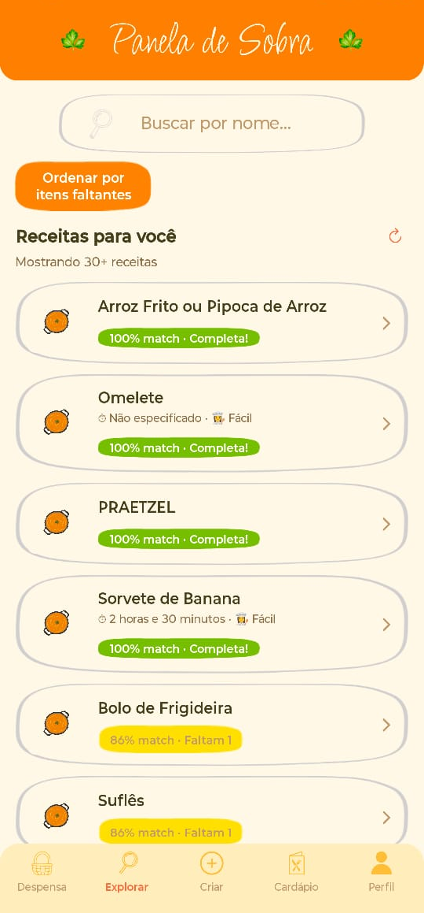
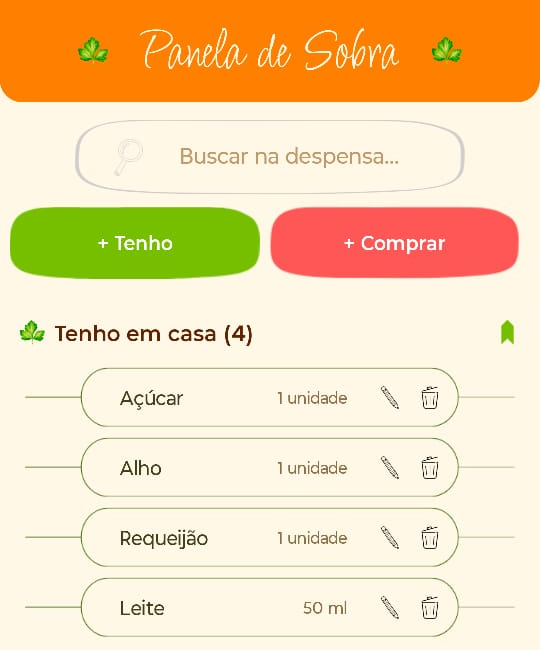
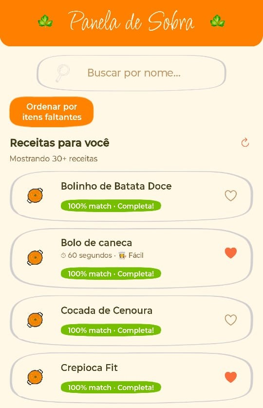
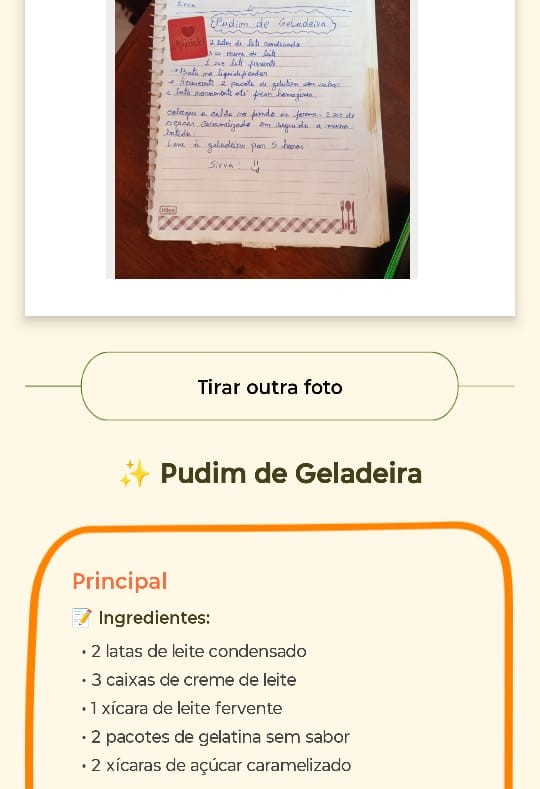

Preparando os ingredientes...
O Panela de Sobra revela o que seus ingredientes já sabem fazer juntos — e ainda guarda suas receitas de caderno como elas merecem.
🧠 Menos peso, mais presença na cozinha.
Junte-se ao teste fechado e ganhe 3 receitas-surpresa com o que você já tem aí.


Abra o app e adicione os ingredientes da sua despensa.

Receitas barsileiras com o que você já tem em casa.

Tire uma foto da sua receita escrita a mão e veja ela no app, compartilhada com toda a comunidade.
Espaço para o que realmente pede seu paladar. Chega de abrir a geladeira e não ter ideia.
Digitalize aquele caderno da vó. Tire uma foto da receita manuscrita e veja o texto listado nas receitas indicadas.
Cardápio da semana sempre organizado. Planeje refeições listando suas receita sfavoritas no cardápio semanal.
Lista de compras integrada com despensa. Com um toque, os ingredientes da sua lista de comprasvão direto para sua despensa.
Desperdício zero. Use o que já tem, economize dinheiro e ajude o planeta, uma panela por vez.
Feito com afeto. Um app que parece ter sido feito na cozinha.
Entre para o teste fechado, tenha acesso ao app e dê suas opiniões do que podemos melhorar.
Você fará parte do grupo que está moldando o app. Sua opinião será ouvida.
Maiteux acredita que ninguém deveria precisar de um diploma de chef para comer bem. Depois de anos vendo amigos e amigas estressados na cozinha, resolveu criar um app que cuidasse da parte chata e deixasse só o gostoso: o sabor.
O Panela de Sobra nasceu da vontade de simplificar, acolher e dar um jeitinho gostoso de aproveitar cada ingrediente. Hoje, ela lidera o projeto entre código, panelas e muitos testes de sabor.